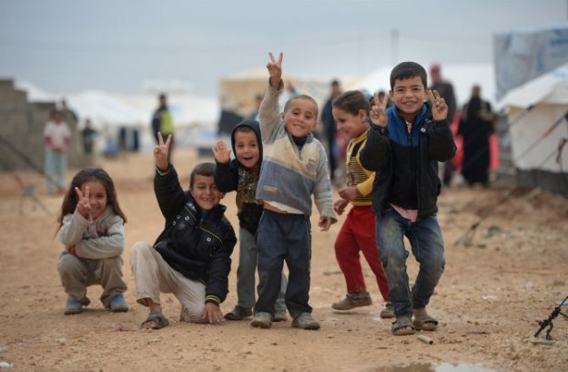
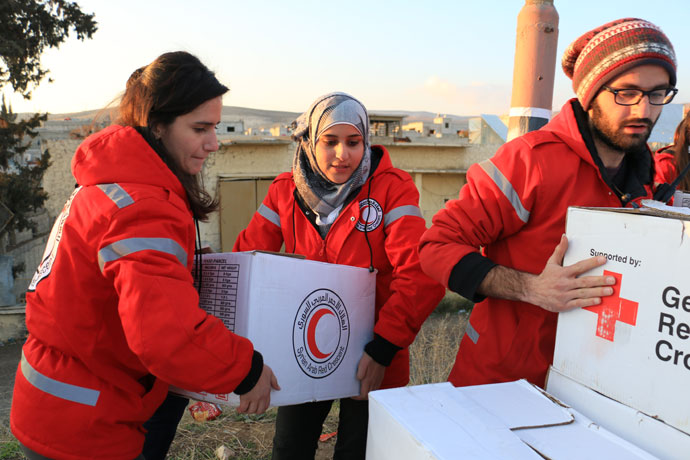
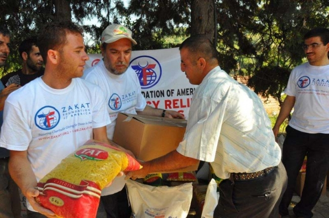
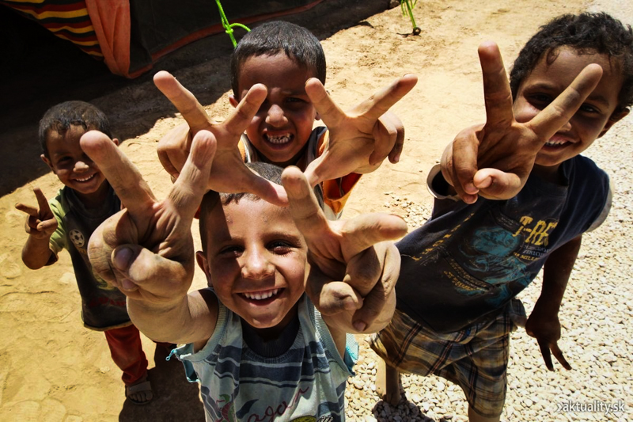

"Unselfish and noble actions are the most radiant pages in the biography of souls." ~David Thomas
Take time to provide sincere help towards people who drastically need it. Use the information on this page as a guide to find the closest Humanitarian aid center and help Syrian Refugees near you.




What is the first step?
How to get involved?
Where would I work?
Taking care of Refugees.
Time is very precious and giving that away is never easy. There are many forms of charity and one comes through the form of donations.
If you haven't already, check out the donations link and contribute any amount desired. There are also many external websites that
also provide very good sources. Check those out at the websites link.
For those people who want more of a direct role in helping out the Syrian refugees, there are several ways to get involved.
Several organizations such as UNHCR provides opportunities for volunteering your time.
Services such as this gives paves a great path for people who would want to be able to contribute their time toward peace and development.
There are many areas to volunteer your time in including: packaging food, caring for refugees, go abroad and work on development assistance and many more.
Volunteers at places like UN, work in remote isolated duty stations where basic comforts are limited. There very well may not be any electricity or running water, as well as no recreation centers.
Work may also continue day after day with no break. Applicants that are willing to volunteer must know that everyday comforts will be minimized while working.
It will be important to be able to adjust to fast paced working situations and not getting your perferred work station. That said, this should not deter anyone from
giving their time for the sake of someone else. This is one of the best services someone can do for another person.
The amount of refugee children that lost their parents is astonishing. Many have high hopes of coming to the United States in search for families that would take them in.
There are a great number of organizations that are also providing programs for parents to take in orphaned children.
Places like the U.S. Refugee Resettlement Program have devoloped a strategic
way to getting children taken care of my foster families. If interested, follow that link and search for many more in order to provide these kids with a new hope.
Visit this map to see if local organizations of the Administration for Children & Families exists in your state.